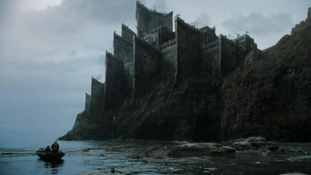

King's Landing - Desembarco del Rey

Desembarco del Rey es la ciudad capital de los Siete Reinos, donde hace 300 años, Aegon el Conquistador desembarcó e inició la construcción de su primera fortaleza, de madera y barro, en la cima de la colina más alta. Es la sede del Trono de Hierro en la Fortaleza Roja y por tanto el asentamiento del Rey de los Siete Reinos. La ciudad principal está rodeada de una muralla y es custodiada por la Guardia de la Ciudad, también conocidos como los Capas Doradas. Está extremadamente poblada, por lo que es una ciudad sucia y llena de edificaciones de madera y paja. Es el principal puerto de los Siete Reinos.
Más tarde, cuando Aegon terminó su conquista, decidió construir su capital en los alrededores de dicha fortaleza, ya que era un lugar estratégicamente importante y una región que no pertenecía ningún reino en concreto, tomando como sus propios vasallos a los señores próximos, creando así las Tierras de la Corona.
Con el tiempo, más reyes de la Casa Targaryen continuaron expandiendo la ciudad y continuó siendolo luego de la "Rebelión de Robert"
Winterfell - Invernalia

Invernalia es la asentamiento ancestral de la Casa Stark. Es considerada la capital del Norte. Está localizada en el centro de la provincia norteña de los Siete Reinos, cerca del Camino Real que lleva a Desembarco del Rey.
Invernalia fue supuestamente construida por Brandon Stark el Constructor hace más de ocho mil años, con la ayuda de los gigantes.[1] Los maestres consideran que fue construida en parcialmente durante diversas épocas, desde que los antiguos Stark no nivelaban el terreno y planificaban la construcción como una sola estructura.
Durante la mayor parte de la historia registrada, Invernalia fue la sede de la Casa Stark, como Reyes del Norte y más tarde como guardianes, después de que el rey Torrhen Stark juró lealtad a Aegon el Conquistador y sus dragones.
Casterly Rock - Roca Casterly

Roca Casterly es el asentamiento de la Casa Lannister. La fortaleza se localiza en las Tierras del Oeste de Poniente, ante las costas del Mar del Ocaso.
Esta tierra siempre ha tenido grandes riquezas y la mayor parte de las edificaciones y dependencias están talladas en la roca, en lo que se considera uno de los mayores logros arquitectónicos de los Siete Reinos. La fortaleza está en una zona rica en minas de oro y nunca ha caído ante un enemigo. Se cree popularmente que la fortaleza parece un león que reposa ante la puesta de sol.
Pese a que la mayor parte de la Historia de la Roca es desconocida, sabemos que durante la Edad de los Héroes, antes de la llegada de Aegon y el nacimiento de las grandes casas, pertenecía a los Casterly, señores de la Roca por aquel entonces. Un aventurero, conocido como Lann el Astuto consiguió engañar a los Casterly, y hacerse con el control de la Roca. Desde entonces, los Lannister afirman que, por línea materna, descienden de este hombre.
A través de los tiempos, esta fortaleza es símbolo del poder y la riqueza de la Casa Lannister, aumentando su poder y esplendor bajo el mandato de Lord Tywin Lannister. Se dice que muy pocas personas han conseguido escapar de las laberínticas mazmorras que hay a lo largo de la montaña.
Storm's End - Bastión de Tormentas
Bastión de Tormentas fue la fortaleza de los Reyes de la Tormenta, y actualmente, uno de los asentamientos principales de la Casa Baratheon. Situada en la costa de las Tierras de la Tormenta, posee acceso al mar hacia la Bahía de los Naufragios. Se dice que mientras quede algún Baratheon en pie, Bastión de Tormentas jamás cederá.
Bastión de Tormentas fue sitiado cerca de un año las fuerzas de Lord Mace Tyrell, que comandaba las fuerzas terrestres, mientras que la flota de Lord Paxter Redwyne del Rejo mantuvieron el castillo acorralado por mar. Sin embargo, Stannis Baratheon, hermano de Lord Robert Baratheon al mando de la defensa, se negó a ceder, y sus hombres fueron obligados a comer ratas ante la falta de suministros. El herrero Donal Noye perdió un brazo durante el sitio. Un contrabandista llamado Davos atravesó el bloqueo naval de la flota Redwyne en plena noche y llegó a un túnel bajo la fortaleza con su barco negro con velas negras y un cargamento de pescado en salazón y cebollas, permitiéndole a Stannis resistir hasta que Lord Eddard Stark llegó y rompió el asedio
Después de que Lord Robert Baratheon se convirtiera en Rey de los Siete Reinos, dio el castillo a su hermano más joven, Renly Baratheon, algo que Stannis se tomó como una grave ofensa.
Dragonstone - Roca Dragón
Rocadragón es la fortaleza de la Isla de Rocadragón. Fue la fortaleza ancestral de la Casa Targaryen hasta la Guerra del Usurpador, cuando el rey Robert I se la concedió a su hermano Stannis Baratheon.
Los Targaryen se instalaron en la Isla de Rocadragón huyendo de la Maldición de Valyria. La fortaleza fue construida en tiempos del Feudo Franco de Valyria con avanzadas técnicas valyrias de construcción que se perdieron con la Maldición. Algunos dicen que se construyó con fuego y magia
Fue el asentamiento de los Targaryen hasta la conquista de los Siete Reinos por parte de Aegon I. Desde entonces sirvió como sede del heredero al Trono de Hierro, siendo éste llamado Príncipe de Rocadragón.
Tras la Rebelión de Robert y la caída de la dinastía Targaryen, Robert Baratheon nombró a su hermano, Stannis Baratheon Señor de Rocadragón, donde fundó la Casa Baratheon de Rocadragón.
The Wall - El Muro
El Muro es una inmensa muralla de hielo que se extiende de este a oeste en el norte de Poniente y que separa los Siete Reinos de las tierras salvajes de más allá.
El Muro fue supuestamente creado hace más de ocho mil años por Brandon el Constructor después de la llamada Larga Noche, para defender los reinos de los hombres de los salvajes y los Otros. El Muro es protegido desde siempre por la Guardia de la Noche y, de acuerdo a algunos, también por hechizos antiguos y hechicería olvidada.
Según la leyenda, Brandon el Constructor hizo poner los cimientos del Muro en los lugares más elevados naturalmente. Varias menciones en la narración sugieren que el Muro era mucho más bajo en esa época y que los constructores de la Guardia de la Noche lo han ampliado y mejorado a lo largo de los siglos. Sin embargo, al momento de la narración, la Guardia de la Noche está muy disminuida y se dedica sólo a tareas de mantenimiento.